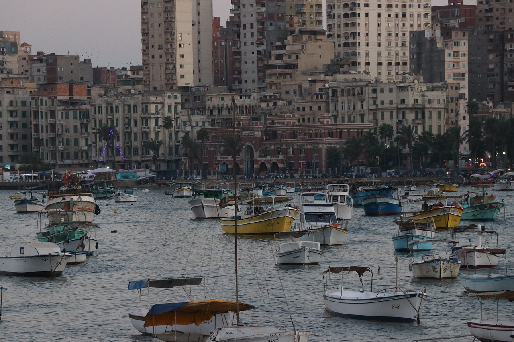
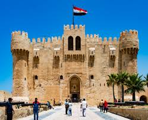
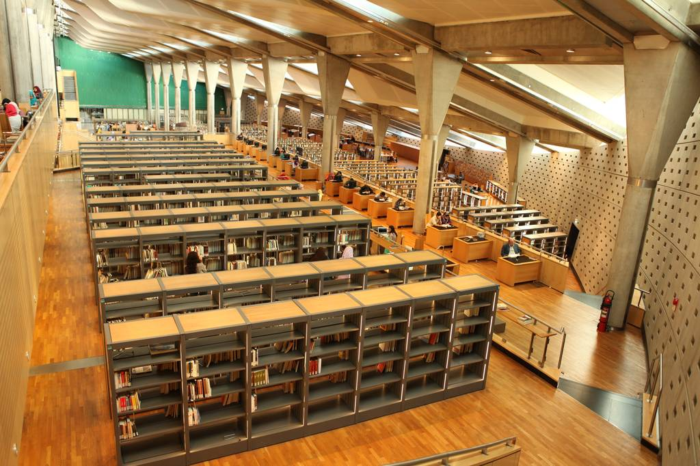

Founded in 331 BC by 25-year-old Alexander the Great, Alexandria (Al Iskendariyya) is the stuff of legend. Its towering Pharos lighthouse, marking the ancient harbour's entrance, was one of the Seven Wonders of the World, and its Great Library was considered the archive of ancient knowledge. Alas, fate dealt the city a spate of cruel blows. The Pharos collapsed and the Great Library was torched. Part of the ancient city disappeared under the sea and part under the modern city, so there are few visible remains of the glorious past.
The Citadel of Qaitbay is a 15th-century defensive fortress located on the Mediterranean sea coast, in Alexandria, Egypt. It was established in 1477 AD by Sultan Al-Ashraf Sayf al-Din Qa'it Bay. The Citadel is situated on the eastern side of the northern tip of Pharos Island at the mouth of the Eastern Harbour.
The Bibliotheca Alexandrina is a major library and cultural center located on the shore of the Mediterranean Sea in the Egyptian city of Alexandria. It is both a commemoration of the Library of Alexandria that was lost in antiquity, and an attempt to rekindle something of the brilliance that this earlier center of study and erudition represented. The idea of reviving the old library dates back to 1974, when a committee set up by Alexandria University selected a plot of land for its new library. Construction work began in 1995 and, after some US$220 million had been spent, the complex was officially inaugurated on 16 October 2002. In 2010, the library received a donation of 500,000 books from the Bibliothèque nationale de France. The gift makes the Bibliotheca Alexandrina the sixth-largest Francophone library in the world. The library has shelf space for eight million books, with the main reading room covering 20,000 square metres.
